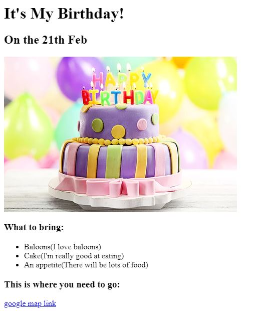

<!-- TODO 1: Create the HTML Boilerplate -->
<!DOCTYPE html>
<!-- TODO 2: Add Your previous projects' HTML into the public folder -->

<!-- TODO 3: Take screenshots of your project previews and add the images to the images folder -->

<!-- TODO 4: Add titles/subtitles etc. -->
<h1>Heejing's Portfolio</h1>
<h2>I'm a Web Developer</h2>
<hr />
<!-- TODO 5: Add a link to the project pages -->
<h3><a href = "/Section 3/3.2 Anchor Elements/index.html">Favorite Website Project</a></h3>


<h3><a href = "/Section 3/3.4 Birthday Invite Project/index.html">Birthdat Invite Project</a></h3>


<hr/>
<a href = "./public/about.html">About Me</a> <a href="./public/contact.html">Contact Me</a>
<!-- TODO 6: Add images to show the project previews
HINT for TODO 6: You can use the height attribute set to 200 to make the image smaller:
https://developer.mozilla.org/en-US/docs/Web/HTML/Element/img#attr-height -->

<!-- TODO 7: Add the Contact Me and About Me page links -->